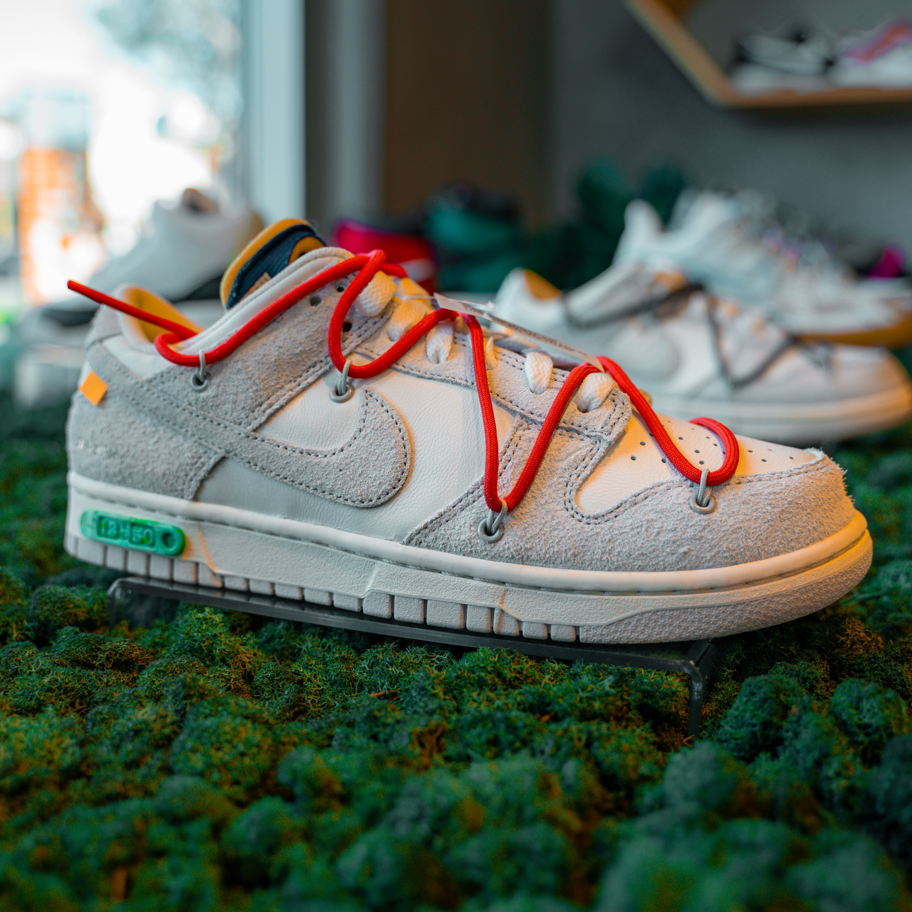

Nike
La marque au swoosh a été créée en 1971 par Philip Knight et Bill Bowerman. C'est aujourd'hui la plus populaire sur le marché de la sneaker.
Adidas
Adidas a vu naître en 2009,Yeezy, une collaboration de mode entre la marque de sport Allemande et le rappeur américain Kanye West.

New Balance
Depuis quelques années, la marque Américaine fait sa place dans le monde de la sneakers avec d'importantes collaborations.

Jordan
Nike Air Jordan est une filiale de la marque Nike. Cette collaboration porte le nom de Michael Jordan, ancien joueur des Bulls de Chicago en NBA.